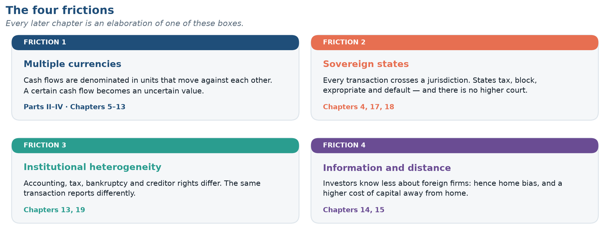
1 Globalization and the Multinational Firm
Data in this chapter were last refreshed on 12 November 2026. Every chart names its source and retrieval date beneath it.
This chapter is organized as six modules, each ending with a short check, followed by a Chapter Checkpoint. The web edition tracks your progress.
Daily FX turnover: roughly how much, and how does it compare with a year of world goods trade?
Can a U.S. firm with only U.S. customers, suppliers and dollar debt have currency exposure? How?
If banks forecast the euro to weaken, is it cheaper or dearer for a U.S. firm to lock in a euro receivable with a forward today?
Learning Objectives
After completing this chapter you should be able to:
- Explain why international finance is a distinct field rather than an application of domestic corporate finance, in terms of four specific frictions.
- Describe the scale and composition of global financial activity using primary statistical sources.
- Identify the principal participants in international financial markets and the objective each is pursuing.
- Distinguish the three categories of foreign exchange exposure and recognize which applies to a given business situation.
- Evaluate the claim that globalization has stalled or reversed, using trade, investment, and financial-flow evidence.
- Retrieve current international financial data from an authoritative source and assess its vintage and reliability.
- Explain why artificial intelligence lowers the information friction but not the other three, and why a better cash-flow forecast is not an exchange-rate forecast.
1.1 What Makes International Finance Different
Domestic corporate finance gives you a powerful toolkit: discounted cash flow, the cost of capital, capital structure, risk management. None of it is wrong when you cross a border. All of it becomes harder, for four reasons that structure this entire book. Exhibit 1.1 is the map; the four sections that follow are the territory.
Friction 1 · Multiple currencies
A domestic firm’s cash flows are denominated in one unit of account. A multinational’s are not, and the rates of exchange between those units move continuously, unpredictably, and sometimes violently. This creates a risk with no domestic counterpart: the value of a perfectly certain future cash flow becomes uncertain simply because it will arrive in a foreign currency.
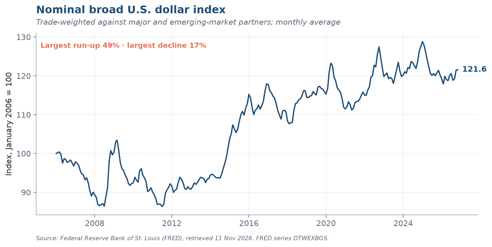
Notice the amplitude in that series when you render it. For a firm whose operating margin is 8 percent, a currency move of 20 percent is not a rounding error — it is the difference between a profitable foreign subsidiary and a write-off.
Friction 2 · Sovereign states
Every cross-border transaction crosses a jurisdictional boundary, and jurisdictions have governments. Governments tax, regulate, expropriate, impose capital controls, block repatriation, rewrite tariff schedules, and occasionally default on their own obligations. Collectively these are country risk or political risk, and they have no clean analogue in domestic finance because there is no higher authority to appeal to. A contract between two U.S. firms is enforceable in U.S. courts. A contract between a U.S. firm and a sovereign state is enforceable only to the degree the state consents, or to the degree the firm can seize assets abroad — the subject of Chapter 18.
Friction 3 · Institutional heterogeneity
Accounting standards, bankruptcy codes, disclosure rules, tax treaties, creditor rights and governance norms all differ across countries, and the differences are not cosmetic: the same economic transaction can report different earnings under IFRS and U.S. GAAP (Chapter 13), confer different rights depending on governing law, and face radically different effective tax rates depending on structure (Chapter 19).
Friction 4 · Information and distance
Investors know less about foreign firms than domestic ones, and the gap persists even when the raw disclosures are comparable. This friction explains the home bias puzzle — investors hold far more domestic equity than any standard portfolio model recommends — and it raises the cost of capital for firms raising money abroad (Chapters 14 and 15).
How to read the rest of the book
Every chapter that follows attacks one of these four frictions. When a topic feels unmoored, return to Exhibit 1.1 and ask which friction it addresses. The Top Ten at the front of the book compresses the whole field into ten propositions for exactly that purpose.
Name the four frictions that make international finance different from domestic corporate finance.
Multiple currencies (the value of a certain foreign cash flow is uncertain); sovereign states (country or political risk, with no higher authority to appeal to); institutional heterogeneity (accounting, bankruptcy, disclosure, tax and governance differ); information and distance (investors know less about foreign firms, which explains home bias).
A currency gain and a currency loss of the same size are not equally important to a firm. Why not, and what does that imply for hedging?
Because consequences are asymmetric even when the distribution is symmetric. A 20% gain makes a good year; a 20% loss can breach a covenant, cut access to credit and force the firm to drop investment it should have made. That convexity, not managerial risk aversion, is the standard case for corporate hedging (Chapter 11).
1.2 How Big Is Global Finance?
Scale matters for intuition, so let us establish benchmarks. The most common measure of real-economy integration is trade openness: exports plus imports as a share of GDP.
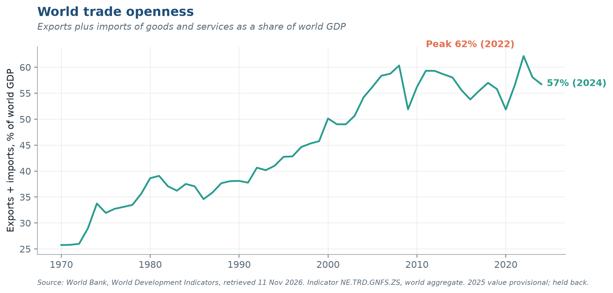
The financial economy is a different order of magnitude — and the comparison is easier to feel on one axis than to read in a sentence.
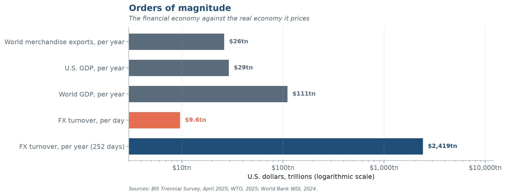
Exhibit 1.5 plots the headline series from the BIS Triennial Survey, the only global census of FX activity.
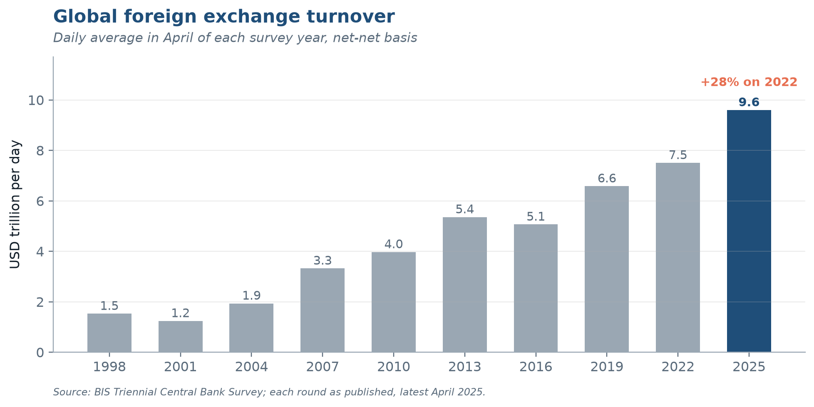
Two features deserve comment. First, the series grows faster than world trade or world GDP over the same period — financial activity has outpaced the real transactions it nominally serves. Second, it is not monotonic: turnover fell between 2013 and 2016, a reminder that the post-crisis regulatory tightening and the retreat of bank balance-sheet capacity had measurable effects on market size. Growth in this market is not a law of nature.
Put the two economies side by side and the asymmetry is stark.
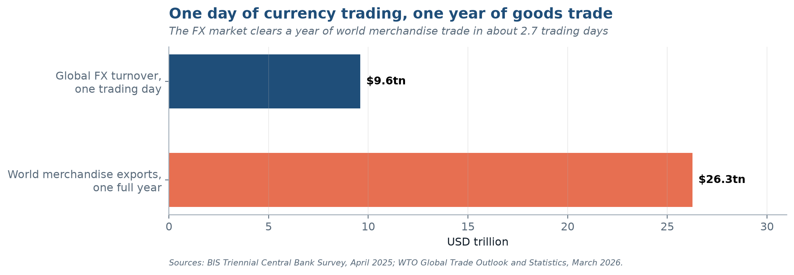
The ratio is roughly 2.7 trading days of FX turnover per year of world goods trade. If currency trading existed only to settle trade invoices, the market would be about one-hundredth of its observed size. It is not: the overwhelming majority of turnover is dealer-to-dealer position management, hedging of financial rather than commercial exposures, and speculation. We decompose it properly in Chapter 5.
The same survey measures a second market of comparable size.
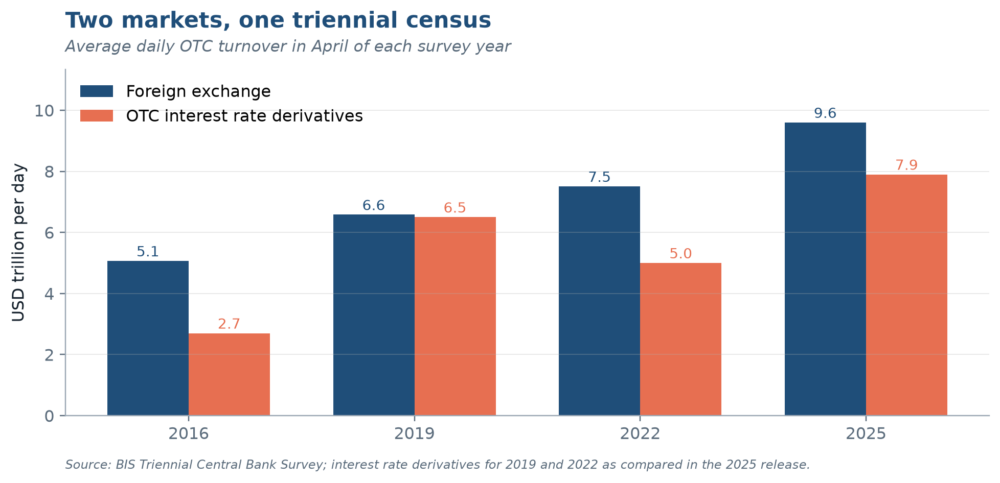
FX turnover runs to trillions of dollars a day, while world goods exports are a couple of dozen trillion a year. Why is there no contradiction?
Almost none of the turnover pays for trade. It is dealer-to-dealer position management, hedging of financial exposures and speculation. The FX market clears a year of goods trade in a handful of trading days; if it only settled trade invoices it would be about one-hundredth of its size.
Global FX turnover fell between 2013 and 2016. What does that tell you about the market?
That growth in this market is not a law of nature. The fall coincided with post-crisis regulatory tightening and the retreat of bank balance-sheet capacity, which shrank dealers’ willingness to make markets. Market size responds to regulation and to the cost of intermediation, not only to the volume of trade and investment it serves.
1.3 Who Is in This Market?
Six groups transact, and each is pursuing something different. Knowing whose objective function sits on the other side of your trade is what separates a finance professional from a price-taker — and the distribution in Exhibit 1.8 is the first surprise of the course.
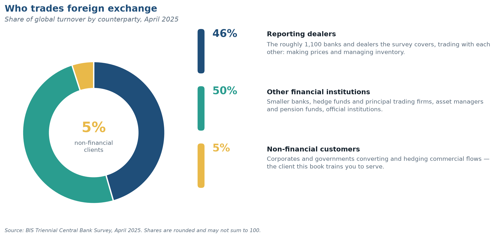
| Participant | Primary objective | Typical instrument | Chapter |
|---|---|---|---|
| Non-financial corporations | Convert and protect commercial cash flows | Spot, forwards, options | 11–13 |
| Dealer banks | Earn the spread; manage inventory risk | All; dominate inter-dealer market | 5 |
| Institutional investors | Currency as a by-product of, or a source of, return | Forwards, FX swaps, futures | 15–16 |
| Hedge funds and PTFs | Direct return from currency positions and liquidity provision | Everything, at high frequency | 5, 7 |
| Central banks | Policy objectives: reserves, stability, intervention | Spot, swaps, reserve portfolios | 2, 4, 20 |
| Retail and payments firms | Transaction service for households and small firms | Spot via aggregators | 5 |
The critical structural fact: the overwhelming majority of turnover is financial, not commercial. Inter-dealer and financial-institution trades dominate; non-financial corporate turnover is a single-digit share of the total. A corporate treasurer executing a $50 million hedge is a small participant in a market whose price is set by other forces, and that is precisely why the treasurer needs to understand those forces.
Who sets prices in the FX market, and roughly how big is the share of non-financial corporations?
Dealer banks and other financial institutions. Non-financial corporations account for a single-digit share of turnover, so a corporate treasurer is a price-taker in a market whose price is set by others, which is exactly why the treasurer needs to understand them.
What two lessons does the FX benchmark scandal carry forward, and how did it differ from the LIBOR scandal?
First, benchmarks that are economically important but structurally unsupervised attract manipulation (LIBOR, metals and oil assessments show the same pattern). Second, choosing a hedge-execution benchmark is a governance decision, not just an operational one. It differed from LIBOR in method: LIBOR was rigged through false rate submissions, the FX fix through trading into the fixing window. The episode produced the FX Global Code.
1.4 Three Kinds of Currency Exposure
The managerial core of this book is Part IV, and it rests on a taxonomy students routinely conflate. Exhibit 1.9 states it compactly; read it before the paragraph that follows, not after.
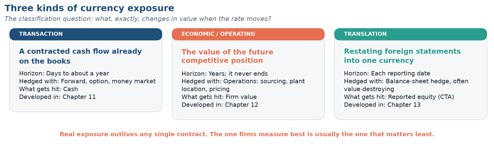
Three examples fix the categories. A U.S. firm has invoiced a German customer €4 million payable in 90 days: the euro amount is certain, the dollar amount is not, and a forward contract hedges it almost exactly — transaction exposure. A U.S. machine-tool maker selling only domestically against a Japanese rival loses pricing power when the yen depreciates, though every invoice it writes is in dollars — economic exposure, larger, longer and unhedgeable with any single contract. A parent restating a Mexican subsidiary’s peso books into dollars reports a different consolidated equity when the peso moves, with no cash crossing any border — translation exposure, a reporting phenomenon with real consequences through covenants, compensation and investor perception.
Classification is not an academic exercise; it determines which instrument is even applicable. Exhibit 1.10 is the diagnostic, and it is worth committing to memory.
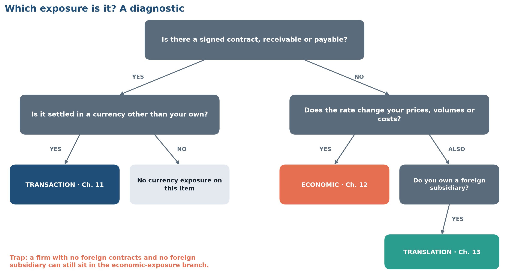
Name the three kinds of currency exposure and give a one-line example of each.
Transaction: a €4 million invoice payable in 90 days; the euro amount is fixed, the dollar amount is not; a forward hedges it. Economic: a U.S. firm selling only at home loses pricing power when its Japanese rival’s yen falls. Translation: restating a Mexican subsidiary’s peso balance sheet into dollars changes reported equity with no cash moving.
In Application 1.1, which of CPC’s exposures is easiest to hedge, and which is probably the largest? Why does the difference matter?
The euro receivable is easiest (a 60-day forward) but probably the smallest in present-value terms. The economic exposures, the future European sales and the competition with the Japanese rival, are likely the largest and the most often overlooked. Treasuries tend to hedge what they can measure, not what matters most.
1.5 Has Globalization Stalled?
Before engaging the question, place it in time. The present moment is the fifth distinct regime in eighty years, and every one of its predecessors felt permanent from the inside.
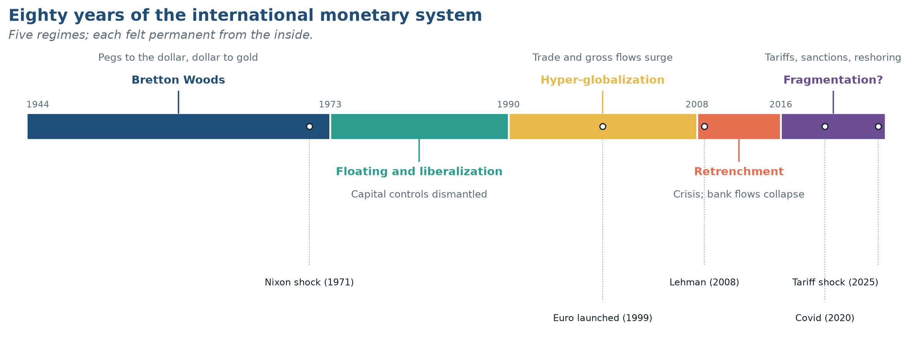
A serious senior-level course must engage the claim, now widespread in the business press, that globalization has peaked and is reversing. The evidence does not support a simple answer, and the discipline of separating the three distinct measures is itself the lesson.
Trade. World trade openness rose steeply for four decades and then stopped rising around 2008. It has not collapsed — the level remains near its historic high — but the trend broke. The phenomenon has acquired the label slowbalization. Contributing factors include the maturation of China’s integration, the shortening of supply chains in electronics, the post-2016 tariff cycle, and a composition shift from goods toward services, which the headline goods-trade series understates.
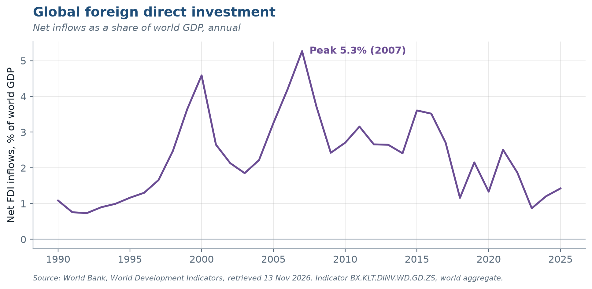
Foreign direct investment. FDI flows are far more volatile than trade. They peaked in 2007, recovered to a secondary high in 2015–16, and have run well below both since. Much of the apparent decline, however, is the unwinding of tax-motivated conduit flows through a handful of financial centers rather than a reduction in real cross-border plant and equipment. The measurement problem here is severe: a large fraction of recorded global FDI passes through special-purpose entities that build nothing.
Financial flows. Gross cross-border financial activity — the subject of Exhibit 1.5 — reached a record in 2025. Cross-border bank claims and international debt issuance have continued to grow. Financial integration has not retreated even where trade integration has plateaued.
In the News
A standing feature. The headlines below come from the public feeds of the financial press and the central banks, filtered for this chapter’s topics. The feed refreshes early every morning, around 6–7 a.m. Eastern, and again whenever the book is rebuilt, so the list you see today may differ from a classmate’s copy from last week.
“Globalization has stalled.” State what has actually happened to trade, to FDI and to financial flows.
Trade: openness stopped rising around 2008 and has plateaued near its high (slowbalization), not collapsed. FDI: volatile and below its 2007 and 2015–16 peaks, partly because tax-driven conduit flows unwound. Financial flows: gross cross-border activity reached a record in 2025. Financial integration has not retreated where trade has plateaued.
State the fragmentation view and the reconfiguration view of today’s world economy in one sentence each, and name one piece of evidence each side relies on.
Fragmentation: tariffs, export controls, sanctions and friend-shoring are splitting the global market into blocs; the 2022 freezing of Russia’s reserves is the signature evidence. Reconfiguration: trade is being re-routed, not reduced, as China-to-U.S. flows now pass through Vietnam and Mexico; the dollar’s share of FX turnover has not fallen. The Live Data Lab asks you to test both.
1.6 How This Book Handles Data
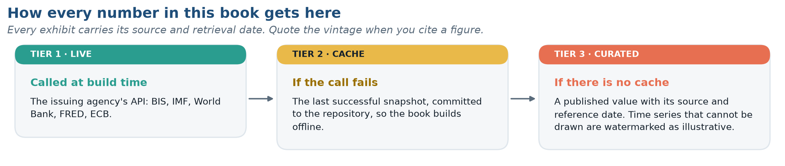
This is a living textbook. Every statistic, table, and figure in it is generated by code that queries the original statistical agency at the moment the book is built. Nothing is transcribed by hand, which has three consequences you should understand as a reader.
Numbers in the text may differ from those your classmate sees. If your instructor built the course PDF in September and you load the web edition in November, an FX rate or a turnover figure may have changed. Each chapter therefore carries a data-vintage stamp at the top, and each exhibit carries a source note with its retrieval date. Always quote the vintage when you cite a figure in your written work. This build, for example, is stamped 12 November 2026.
The source line is the citation. Every figure names the agency, the series and the date it was retrieved. No number is typed by hand: each one goes straight from the agency’s database into the exhibit, so there is no step at which it could be mistyped — and if you doubt a figure, the source line tells you exactly where to check it.
Primary sources, named. Five institutions supply almost everything in this book, and you should know what each is authoritative for:
| Source | Authoritative for | Frequency |
|---|---|---|
| BIS | FX and derivatives turnover, cross-border banking, effective exchange rates | Triennial / quarterly |
| IMF | Balance of payments, reserve composition (COFER), exchange rate regimes | Quarterly / annual |
| World Bank | Development indicators, trade, FDI, GDP | Annual |
| FRED (St. Louis Fed) | U.S. and international rates, dollar indices, daily spot FX | Daily / monthly |
| ECB | Euro reference rates, euro-area financial statistics | Daily |
1.7 AI and the Four Frictions
Every chapter closes its core material with a one-page look at how artificial intelligence bears on what the chapter has just developed. For this chapter the answer is short, and it is worth holding onto because the rest of the book depends on it.
Of the four frictions in Section 1.1, AI attacks only one. Multiple currencies exist because sovereigns issue money (Friction 1); jurisdictional risk exists because states have power (Friction 2); institutional heterogeneity exists because legal systems evolved separately (Friction 3). No model dissolves any of these. Friction 4 is different: it is a cost. Investors know less about foreign firms because reading a filing in another language, under another accounting standard, for another regulator, is expensive — and that is precisely the work current models do cheaply. Technology lowers costs; it does not revoke sovereignty.
If that is right, the home bias of Section 1.1 should be shrinking as the cost of knowing about foreign firms falls. Whether it is remains an open empirical question, and Chapter 15 gives you the data to examine it.
The best-documented gains so far are inside corporate treasury, where firms report sizable hedging-cost savings — figures on the order of 30 percent in one widely reported pilot — from forecasting their own foreign-currency cash flows more accurately. Keep that forecast separate from a forecast of the exchange rate:
One rule follows for your own work in this course: AI may help you write; it may not be your source. A figure is the agency, the series, the vintage and the retrieval date (Section 1.6); no model output satisfies that.
What is the difference between a statistic’s reference period and its retrieval date, and why cite both?
The reference period is when the activity happened; the retrieval date is when the figure was pulled. Agencies revise, balance-of-payments data for years, so the same reference period can carry different values in different vintages. Citing both lets anyone reproduce the number you used.
“Our AI forecasts the euro, so we have stopped hedging.” Name the two errors.
Category error: AI’s documented gains are in forecasting the firm’s own cash flows, not the exchange rate, and no model reliably beats a random walk out of sample. Theory error: hedging is left-tail insurance against convex distress costs, not a bet on direction, so even an accurate forecast would not justify dropping it.
1.8 Live Data Lab · Taking the temperature of the global economy
Objective. Retrieve three current series, assess their vintage, and form a defensible view on whether global integration is advancing or retreating.
Task 1 — Trade. Retrieve world trade openness (World Bank NE.TRD.GNFS.ZS, aggregate WLD) for 1970 to the present. Identify the peak year and compute the change from peak to the latest observation. Is the decline statistically meaningful relative to the series’ typical annual variation?
Task 2 — Currency. Retrieve the broad nominal dollar index (FRED DTWEXBGS) for the last 20 years. Compute the annualized volatility of monthly log changes. Then compute the maximum drawdown and the maximum run-up. Which is larger, and what does that asymmetry imply for a firm with foreign-currency revenue and dollar debt?
Task 3 — Investment. Retrieve net FDI inflows as a share of GDP (BX.KLT.DINV.WD.GD.ZS) for the world aggregate, the United States, China, Mexico, and Vietnam. Plot all five on one axis since 2000.
Deliverable. In 400 words, state whether the evidence favors the fragmentation view or the reconfiguration view of Section 1.5. You must cite at least one number against your own position and explain why you nonetheless reject it. Report the retrieval date of every series you use.
Summary
- International finance is distinct because of four frictions: multiple currencies, sovereign states, institutional heterogeneity, and informational distance. Every chapter of this book elaborates at least one.
- The FX market turns over roughly $9.6 trillion per day (BIS, April 2025), a 28 percent increase over 2022 and vastly larger than the trade flows it nominally serves. Almost all of this turnover is financial rather than commercial.
- Six participant groups transact with different objectives; dealers and financial institutions, not corporations, set prices.
- Currency exposure comes in three forms — transaction, economic, and translation. Economic exposure is the largest and the most frequently neglected.
- Globalization has plateaued in trade, fallen in measured FDI, and continued to grow in gross financial activity. “Globalization is over” is not supported by the financial data.
- This book regenerates its own data; always check and cite the vintage.
- Artificial intelligence attacks the one friction that is a cost — information — and leaves the three that rest on sovereign authority intact. Its documented gains are in forecasting a firm’s own cash flows, not exchange rates; it does not change the case for hedging; and a model output is never a citable source.
Key Terms
Country risk · Cross-border claim · Data vintage · Economic (operating) exposure · Foreign direct investment (FDI) · Fragmentation · FX Global Code · Home bias · Multinational corporation (MNC) · Slowbalization · Trade openness · Transaction exposure · Translation exposure · Triennial Central Bank Survey · Weaponization of finance
Recall Ledger
Short answers, from memory, no notes. Check them afterwards; record only the ones you missed and redo those alone in one week. This is the spacing that makes the knowledge stick, and it is the whole reason this section exists.
From this chapter
- Name the four frictions that distinguish international finance, and give one chapter of this book that is primarily about each.
- Global FX turnover is roughly $9.6 trillion per day while world merchandise exports are roughly $26.3 trillion per year. Explain, in two sentences, why there is no contradiction in those two numbers.
- A firm hedges every foreign-currency receivable with a forward contract and reports that it is “fully hedged.” State precisely what it is hedged against and what it is not.
Carried forward (these will appear again, and in later chapters you will find questions from Chapter 1 here)
- Non-financial corporations account for only a single-digit share of FX turnover. Why, and why does that make it more important, not less, for a corporate treasurer to understand who else is trading? Give one example from Section 1.3.
- Of the Top Ten propositions at the front of the book, which one would most change a treasurer’s behavior tomorrow morning? Defend the choice in three sentences.
AI item
- Explain, in two sentences, why artificial intelligence plausibly reduces Friction 4 but not Frictions 1, 2 or 3. Then state one piece of evidence that would show the reduction is actually happening.
Chapter Checkpoint
The Checkpoint draws on every module. It opens when all the module checks above are done. You get new numbers on each attempt, up to three attempts, and your best score counts.
The Checkpoint runs in the web edition of this chapter.
Problems
A · Concept
1.1 State the four frictions that distinguish international from domestic finance, and give one real-world example of each that does not appear in this chapter.
1.2 A firm sells only in its home market, buys only from domestic suppliers, and has no foreign debt. Construct a specific scenario in which it nonetheless suffers materially from a currency movement.
1.3 Distinguish the reference period of a statistic from its retrieval date, and explain why a balance-of-payments figure requires both.
1.4 Why might reported global FDI overstate real cross-border investment in productive capacity?
B · Quantitative
1.5 Global FX turnover was $7.5 trillion per day in April 2022 and $9.6 trillion in April 2025. (a) Compute the total percentage change. (b) Compute the compound annual growth rate. (c) World nominal GDP grew roughly 5 percent per year over the same period; interpret the difference.
1.6 World merchandise exports are approximately $26.3 trillion per year. Using the April 2025 turnover figure and 252 trading days, compute (a) annual FX turnover, (b) the ratio of FX turnover to merchandise trade, and (c) the number of trading days required to clear one year of goods trade.
1.7 A U.S. firm expects €4,000,000 in 90 days. The spot rate is $1.0850/€. (a) Compute the dollar value at spot. (b) Recompute at $1.0200/€ and at $1.1500/€. (c) If the firm’s operating margin on this sale is 9 percent, at what EUR/USD rate does the sale become unprofitable, holding costs fixed?
1.8 Turnover grew from $1.2 trillion (2001) to $9.6 trillion (2025). (a) Compute the CAGR. (b) Turnover fell from $5.4 trillion in 2013 to $5.1 trillion in 2016; compute that annualized rate and propose two explanations consistent with the post-crisis regulatory environment.
1.9 A firm’s foreign subsidiary has net assets of 180 million Mexican pesos. The peso moves from 17.0/USD to 19.5/USD over the year. (a) Compute the translation gain or loss in dollars. (b) State where it appears in the financial statements. (c) Explain why hedging it with a forward contract may create cash flow risk where none existed.
C · Analytical
1.10 Economic exposure is larger than transaction exposure yet is hedged far less often. Give three distinct explanations — one from measurement, one from agency theory, one from instrument availability — and propose an empirical test that could discriminate among them.
1.11 Make the strongest possible case that the dollar’s dominance in FX turnover is self-reinforcing rather than a reflection of U.S. economic size. Then identify the single piece of evidence that would most damage your argument.
1.12 The 2022 freezing of Russian central bank reserves has been described as a turning point for the international monetary system. Using only data available to you now, assess whether reserve-currency behavior has in fact changed. Specify what a genuine shift would look like in the data, and over what horizon it would be detectable.
1.13 The Top Ten, at the front of the book, states that two of its propositions are in genuine tension with each other, and that a third is asserted more confidently than the empirical literature strictly supports. Identify the tension and identify the overstated claim. For the tension, explain the conditions under which each proposition dominates; for the overstatement, specify what evidence would be needed to justify the strong form.
Mini-Case · Volkswagen’s $2 Billion Hedge That Wasn’t
In its 2008 fiscal year, Volkswagen reported a loss of roughly €1.5 billion on currency hedges — in a year when the euro moved sharply against both the dollar and several emerging-market currencies. The company had hedged a substantial fraction of its expected foreign-currency revenue using forward contracts, but revenues came in well below forecast as the global financial crisis collapsed vehicle demand. The hedges, sized to a volume of sales that never materialized, converted from a risk-reducing position into an outright speculative one.
Questions
- Classify the exposure VW was attempting to hedge. Was the instrument appropriate to it?
- The company over-hedged because quantity was uncertain as well as price. Explain why a linear instrument (a forward) is poorly suited to an exposure of uncertain size, and what instrument class addresses this directly. (Preview of Chapter 9.)
- Volume risk and currency risk were correlated here: the same crisis that moved the euro also destroyed demand. Does that correlation make the over-hedge more or less damaging than if the two were independent? Show your reasoning.
- VW’s management argued the loss was an accounting artifact that would reverse. Evaluate that claim. Under what conditions is it true, and under what conditions is it an excuse?
- Propose a hedging policy — stating hedge ratio, horizon, and instrument — that would have reduced the damage without abandoning hedging altogether. Defend the cost.
References and Further Reading
Bank for International Settlements. Triennial Central Bank Survey of Foreign Exchange and Over-the-Counter Derivatives Markets. Basel: BIS, April 2025 round, published September 2025. https://www.bis.org/statistics/rpfx25.htm
Bekaert, Geert, and Robert J. Hodrick. International Financial Management. 3rd ed. Cambridge University Press — Chapter 1.
Eiteman, David K., Arthur I. Stonehill, and Michael H. Moffett. Multinational Business Finance. 16th ed. Pearson — Chapters 1 and 2.
Eun, Cheol S., and Bruce G. Resnick. International Financial Management. 9th ed. McGraw-Hill — Chapter 1.
Goldberg, Linda S., Oliver Hannaoui, and Sneha Parthasarathy. “Are Central Banks Moving Out of Dollar Assets?” Liberty Street Economics, Federal Reserve Bank of New York, 2 September 2026.
International Monetary Fund. Currency Composition of Official Foreign Exchange Reserves (COFER): Data Brief, 2026Q1. Washington, DC: IMF, 1 July 2026.
Krugman, Paul R., Maurice Obstfeld, and Marc J. Melitz. International Economics: Theory and Policy. 12th ed. Pearson — Chapters 1 and 13.
Levich, Richard M. International Financial Markets: Prices and Policies. 2nd ed. McGraw-Hill — Chapters 3 and 4.
Madura, Jeff. International Financial Management. 14th ed. Cengage — Chapter 1.
Obstfeld, Maurice, and Kenneth Rogoff. “The Six Major Puzzles in International Macroeconomics: Is There a Common Cause?” NBER Macroeconomics Annual, 2001.
Shapiro, Alan C., and Peter Moles. International Financial Management. Wiley.
Next chapter: the international monetary system — how the world arrived at the current patchwork of floats, pegs, boards, and currency unions, and why the impossible trinity explains most of it.